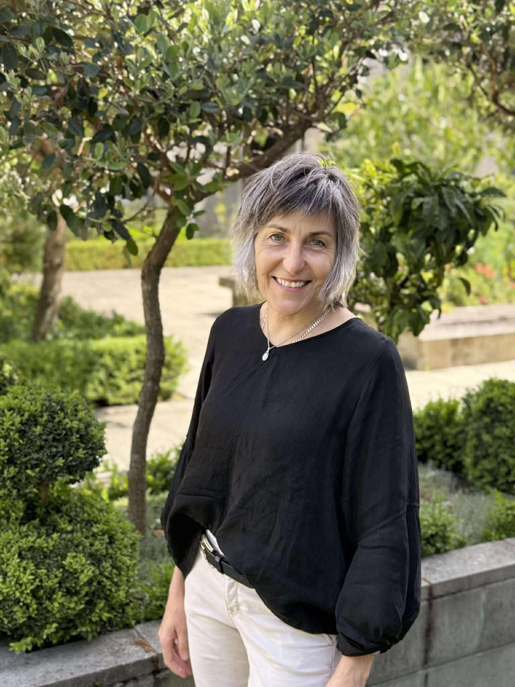
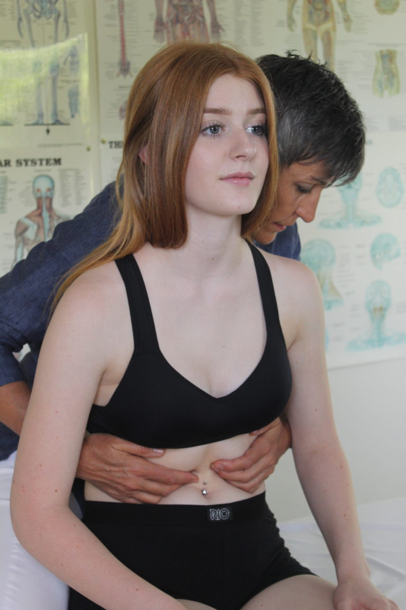
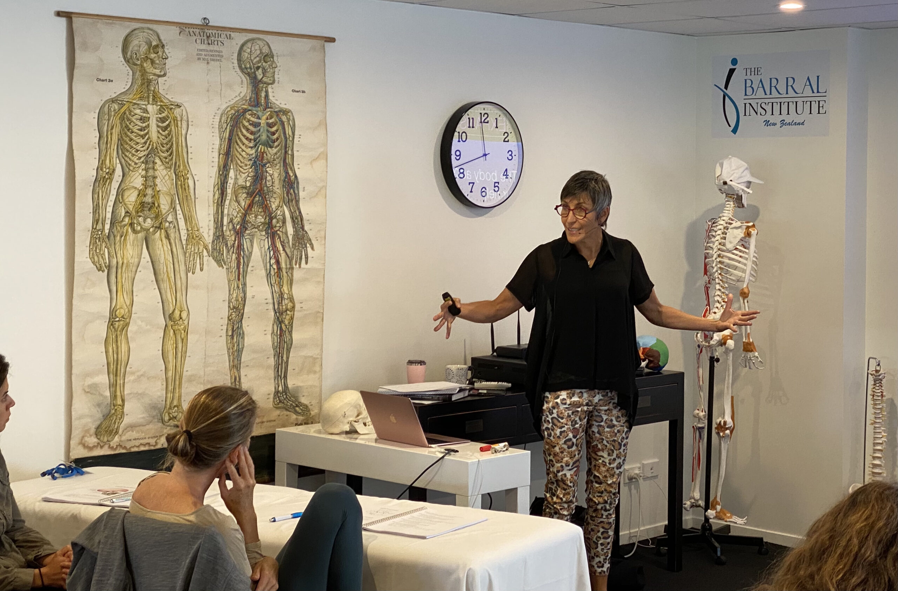
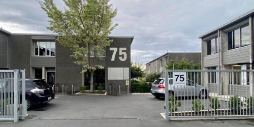

Visceral Manipulation
Rosie has practised Visceral Manipulation since 2008, and it is the foundation for all of her treatments.
Rosie Greene · Practitioner & Teacher
Rosie has practised Visceral Manipulation since 2008, treating adults and children, from elite athletes to people recovering from surgery or trauma.

Rosie Greene has been a practitioner of Visceral Manipulation since 2008, and this work has become the foundation for all of her treatments.
She runs an extensive clinical practice in North Canterbury, New Zealand, treating adults and children who present with a broad spectrum of conditions. Her patients range from elite athletes to people with gastro-intestinal and pelvic conditions, post-surgical and post-trauma conditions, and many others.
Rosie’s broad postgraduate training includes studies in:
Every treatment Rosie gives is built on Visceral Manipulation, alongside the wider manual approaches she has studied since.
Rosie has practised Visceral Manipulation since 2008, and it is the foundation for all of her treatments.
Vascular manipulation is part of Rosie’s broad postgraduate training.
Neural manipulation is another of the postgraduate studies that inform Rosie’s clinical practice.
Rosie has also completed postgraduate study in craniosacral therapy.
Rosie’s clinical practice sees a broad spectrum of presentations, including:
Rosie also sees people with many other conditions. If your concern isn’t listed here, call or email to ask whether she can help.

Rosie has been a practitioner of Visceral Manipulation since 2008. Her postgraduate training includes studies in visceral, vascular and neural manipulation and craniosacral therapy.
Adults and children with a broad spectrum of conditions. She treats elite athletes and people with gastro-intestinal, pelvic, post-surgical and post-trauma conditions, among many others.
Yes. Rosie’s clinical practice treats both adults and children. Call 027 437 2066 to talk about your child’s needs.
Rosie’s rooms are at 11/75 Peterborough St, Christchurch. She runs an extensive clinical practice in North Canterbury.
Phone Rosie on 027 437 2066 or email rosie@rosiegreene.co.nz to arrange a time.
Yes. As well as treating patients, Rosie teaches Visceral Manipulation. You can read more in the Teaching section below.
Visceral Manipulation, the foundation of Rosie’s work since 2008.

Alongside her clinical practice, Rosie teaches Visceral Manipulation, the approach that has been the foundation of her own work since 2008.
Her teaching draws on her years of clinical practice with adults and children, and on postgraduate training in visceral, vascular and neural manipulation and craniosacral therapy.
Rosie can also be reached at rosie@barral.co.nz.
The easiest way to make an appointment is to call or email Rosie directly.
